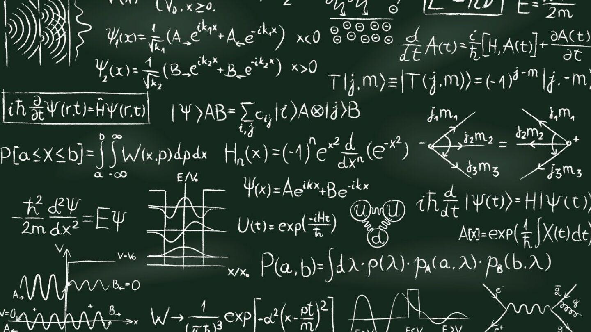

← Back to ProcessQuantum.org course home
A Five-Week Series Presented by Dr. Michael A. Soderstrand
Tuesdays, January 12 – February 9, 2027
7:00 p.m. – 8:30 p.m.
Quantum physics changes our picture of reality; what does that mean for our understanding of God's relationship with the world?
Quantum physics has fundamentally changed our understanding of the physical universe. It has challenged the traditional picture of a predictable, deterministic world and introduced concepts such as probability, uncertainty, superposition, and quantum entanglement. Yet nearly a century after its development, physicists still disagree about what quantum physics tells us about the nature of reality. Several different interpretations have emerged, each offering a different picture of how the universe works.
This series explores four of these interpretations and considers what each might suggest about God's presence and relationship with the world. We will also introduce Process Theology, a theological perspective that understands reality as an ongoing process of becoming, creativity, and relationship. Rather than viewing God as an external creator who simply sets the universe in motion, Process Theology offers a vision of God as intimately related to the ongoing life of creation. We shall see the Process Theology emerges as a particularly powerful way of exploring our central question: “Where Is God in a Quantum Universe?” and how the different pictures of reality offered by quantum physics might deepen our understanding of God's relationship with the universe.
No prior knowledge of quantum physics or Process Theology is assumed or required.
The series is designed for anyone interested in exploring the relationship between modern science, philosophy, and theology. We will introduce the scientific concepts and theological ideas as they are needed throughout the lectures. Mathematical background is not required; our emphasis will be on understanding the underlying ideas and their implications for how we think about reality and God.
There is no required textbook for this series. Suggested readings on both quantum physics and Process Theology will be provided for participants who would like to explore particular subjects in greater depth.
This opening session establishes the scientific, philosophical, and theological framework for the series. We will examine what quantum physics tells us about the physical universe, why its discoveries have challenged our traditional understanding of reality, and why physicists continue to disagree about what those discoveries mean.
Topics will include:
The Copenhagen interpretation is one of the earliest and most influential approaches to understanding quantum mechanics. Associated particularly with physicists Niels Bohr and Werner Heisenberg, it emphasizes probability, measurement, and the limits of what we can meaningfully say about the physical world apart from observation.
Topics will include:
Pilot Wave Theory, also known as de Broglie-Bohm mechanics, offers a very different picture of quantum reality. First developed by Louis de Broglie and later rediscovered and developed by David Bohm, it proposes that particles have definite positions and are guided by an underlying wave. The theory is deterministic, although it also requires a form of nonlocality where the behavior of one particle can depend instantaneously on the state of another, even when separated by great distances.
Topics will include:
Objective-Collapse theories propose that the collapse of the quantum wave function is a real physical process, rather than something that occurs simply because a measurement is made. These theories suggest that indeterminacy may be an inherent feature of nature itself.
One important example is the GRW theory, named after physicists GianCarlo Ghirardi, Alberto Rimini, and Tullio Weber, who proposed it in 1986.
Topics will include:
Relational Quantum Mechanics, developed by physicist Carlo Rovelli, proposes that physical properties are not absolute characteristics of isolated objects. Rather, they are meaningful in relation to other physical systems. This approach offers a particularly interesting opportunity to explore the importance of relationship and interconnectedness in understanding reality.
Topics will include:
Throughout the series, we will return to the central question:
Quantum physics changes our picture of reality; what does that mean for our understanding of God's relationship with the world?
The purpose is not to claim that quantum physics proves the existence of God or establishes any particular theology. Rather, we will explore how different interpretations of quantum reality might challenge, enrich, or deepen our understanding of God's presence, creativity, and activity within creation.
Participants are invited to approach these questions with curiosity, an open mind, and a willingness to explore the fascinating territory where science, philosophy, and theology meet.
Schedule:
Every Tuesday, 7:00 p.m. – 8:30 p.m.
January 12 through February 9, 2027
In-person location:
Thurber Towers
645 Neil Ave, Columbus, OH 43215
Attend remotely via Zoom:
Join the Zoom meeting
For further information:
Dr. Michael A. Soderstrand
soderstrand@ieee.org
202-642-8577